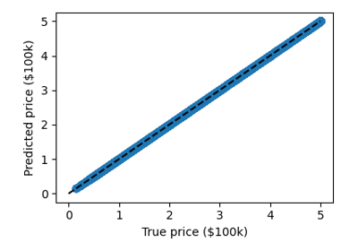
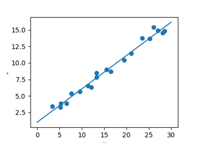
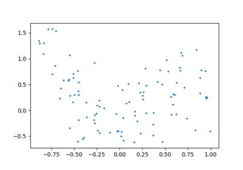

Examples for the scikit-learn chapter¶
Demo PCA in 2D

Measuring Decision Tree performance
Measuring Decision Tree performance
Plot 2D views of the iris dataset
Plot 2D views of the iris dataset

A simple linear regression
tSNE to visualize digits
Use the RidgeCV and LassoCV to set the regularization parameter
Use the RidgeCV and LassoCV to set the regularization parameter
Plot variance and regularization in linear models
Plot variance and regularization in linear models
Simple picture of the formal problem of machine learning
Simple picture of the formal problem of machine learning


Plot fitting a 9th order polynomial
Plot fitting a 9th order polynomial
A simple regression analysis on the California housing data
A simple regression analysis on the California housing data
Nearest-neighbor prediction on iris
Nearest-neighbor prediction on iris
Simple visualization and classification of the digits dataset
Simple visualization and classification of the digits dataset
The eigenfaces example: chaining PCA and SVMs
The eigenfaces example: chaining PCA and SVMs
Example of linear and non-linear models
Example of linear and non-linear models
Bias and variance of polynomial fit
Bias and variance of polynomial fit
Tutorial Diagrams